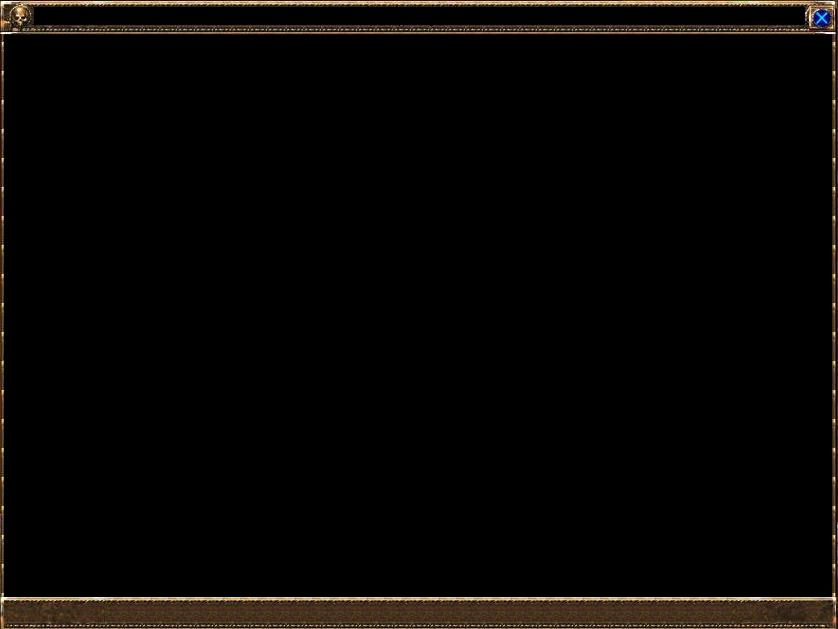

This is a step by step guide to creating the windows of your dreams.
| Window Creation Basics | This is a step by step guide to creating the windows of your dreams. |
| Let’s get started! | |
| The concept | Windows in UO SA client consist of two components: the .xml file and the .lua file. |
| First step - skeleton code | First of all we need to create a .xml file that will contain the definition of our window, and a .lua file that will contain the basic code that the .xml file will be referencing to. |
| SampleWindow.xml | The following code goes into SampleWindow.xml (which we left empty until now) and is an excellent skeleton for basically every type of window. |
| SampleWindow.lua | |
| Make it run | Now all we need to do is write |
| Tips |
| The concept | Windows in UO SA client consist of two components: the .xml file and the .lua file. |
| First step - skeleton code | First of all we need to create a .xml file that will contain the definition of our window, and a .lua file that will contain the basic code that the .xml file will be referencing to. |
| SampleWindow.xml | The following code goes into SampleWindow.xml (which we left empty until now) and is an excellent skeleton for basically every type of window. |
| SampleWindow.lua | |
| Make it run | Now all we need to do is write |
| Tips |
Windows in UO SA client consist of two components: the .xml file and the .lua file. The XML part contains the default definition of the shape and size of the window. It tells the game which button corresponds to which name and functionality from the code point of view. The XML defines things like what type each component is (Button, Label, Image and so on), what each component is called (so that we can reference it later from elsewhere) and what should happen when the user interacts with that component (events such as OnMouseOver). The LUA portion of the window defines the functions that are called from the XML. Anything from what should happen when the window is first initialized when the game is loaded, to what should happen when a player clicks a button, is defined in LUA.
First of all we need to create a .xml file that will contain the definition of our window, and a .lua file that will contain the basic code that the .xml file will be referencing to. For that purpose we go into the interface/Default/Source folder and create two files: SampleWindow.lua and SampleWindow.xml Of course those files will not do much without having some code inside. We need a basic skeleton for both the xml and the lua file.
Now let’s add these files to the list of windows that the game will attempt to initialize when it first starts. This is done by editing Interface.lua and Interface.xml in interface/Default. All we have to do in Interface.xml is add our new .xml file at the end of the long list of xml inclusions, like this.
<Include file="Source/SampleWindow.xml" />
and in Interface.lua at the end of the list of CreateWindow calls.
CreateWindow( "SampleWindow", false )
where the second parameter is false because we do not want the window to show up when the game starts.
Now, the very basic thing we can do at this point is display a simple blank window. The next two sections will explain how to make that happen.
The following code goes into SampleWindow.xml (which we left empty until now) and is an excellent skeleton for basically every type of window.
<Interface xmlns:xsi="http://www.w3.org/2001/XMLSchema-instance" xsi:noNamespaceSchemaLocation="../../Interface.xsd">
<Scripts>
<Script file="Source/SampleWindow.lua"/>
</Scripts>
<Windows>
<!-- MAIN WINDOW DEFINITION -->
<Window name="SampleWindow" movable="true" layer="secondary">
<Size>
<AbsPoint x="800" y="600"/>
</Size>
<Anchors>
<Anchor point="topleft" relativePoint="topleft" relativeTo="">
<AbsPoint x="16" y="400"/>
</Anchor>
</Anchors>
<EventHandlers>
<EventHandler event="OnInitialize" function="SampleWindow.Initialize"/>
<EventHandler event="OnShutdown" function="SampleWindow.Shutdown"/>
</EventHandlers>
<Windows>
<!-- General Window Settings -->
<FullResizeImage name="$parentBackground" inherits="HUDBackgroundBlack">
<Anchors>
<Anchor point="topleft" relativePoint="topleft" relativeTo=""/>
<Anchor point="bottomright" relativePoint="bottomright" relativeTo=""/>
</Anchors>
</FullResizeImage>
<!-- Title Bar -->
<Window name="$parentTitleBar" inherits="DefaultWindowTitleBar"/>
<Button name="$parentClose" inherits="DefaultWindowCloseButton">
<EventHandlers>
<EventHandler event="OnLButtonUp" function="SampleWindow.Hide"/>
</EventHandlers>
</Button>
<!-- Bottom Window Bar -->
<HorizontalResizeImage name="$parentBottomFrame" inherits="DefaultWindowResizeBottomFrame">
<Anchors>
<Anchor point="bottomleft" relativePoint="bottomleft" relativeTo="$parent">
<AbsPoint x="0" y="0"/>
</Anchor>
<Anchor point="bottomright" relativePoint="bottomright" relativeTo="$parent">
<AbsPoint x="0" y="0"/>
</Anchor>
</Anchors>
</HorizontalResizeImage>
</Windows>
</Window>
</Windows>
</Interface>
SampleWindow = {}
function SampleWindow.Initialize()
WindowUtils.LoadSettings( "SampleWindow" )
end
function SampleWindow.Hide()
WindowSetShowing("SampleWindow", false )
end
function SampleWindow.Shutdown()
WindowUtils.SaveSettings( "SampleWindow" )
endIn this code we first create a LUA table with the same name as the window. UO SA Client requires for such a table to be present in each of the windows. Then we define three basic functions: Initialize, Hide and Shutdown. *Initialize() is called the very first time the window is created (NOTE: not when the window is made visible, but much earlier! ) *Hide() gets called when we press the close button in the top right corner of the window *Shutdown() is the function that gets called when the user interface effectively gets shut down (NOTE: not the same thing as a window being made invisible)
Now all we need to do is write
/script WindowSetShowing("SampleWindow", true)in the console and our window should be displayed immediately. You should see something like:
